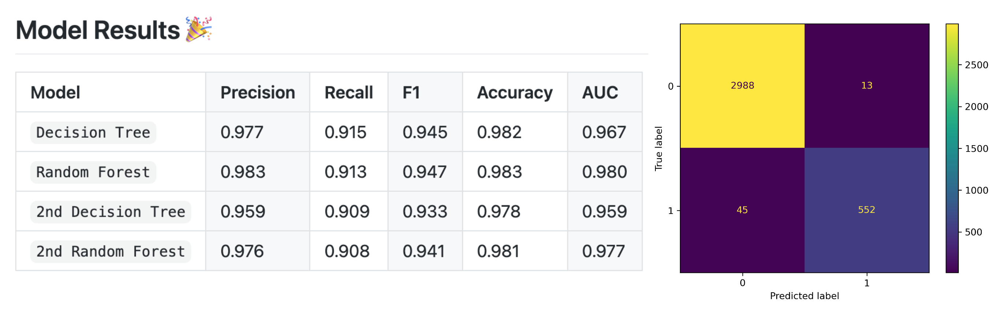
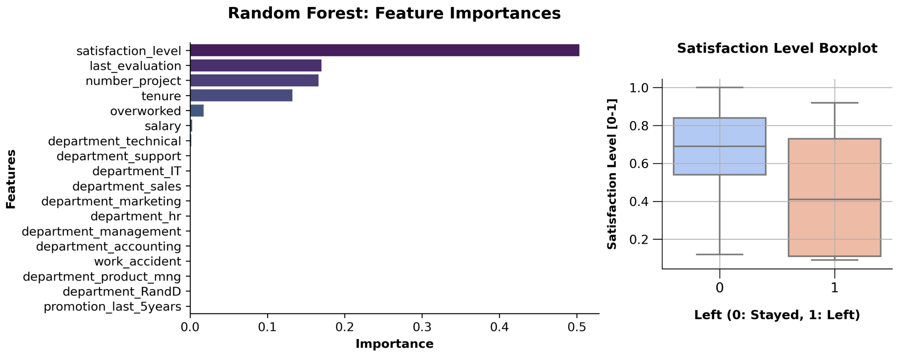

Decision Tree and Random Forest Predictive Models for Employee Churn
The HR department at Salifort Motors wants to improve employee satisfaction levels and answer following question: what’s likely to make the employee leave the company?
The project goals:
- Analyze the data collected by the HR department
- Build a model that predicts whether or not an employee will leave the company
- Identify factors that contribute to their leaving.
Vigorous Predictive Models and Feature Importance Plot
All in all, the evaluation scores of the random forest model are better than those of the decision tree model.
Also, random forest approach is resistant to overfitting which rendering this model as champion in this comparison.
The model predicts more false negatives than false positives, the model might predict that employee will stay when the case actually is opposite.

Insights:
- ➢ Cap the number of projects that employees contributes.
- ➢ Consider promoting employees who have been working for at least 4 years.
- ➢ Conduct further analysis on why four-year tenured employees are so dissatisfied.
- ➢ Either provide compensation to employees for working longer hours, or don’t require them to do so.
- ➢ If employees aren’t familiar with the company’s overtime pay policies, inform them about.
- ➢ High evaluation scores should not be restricted to employees who work 200+ h/month.
- ➢ Improve performance review process.